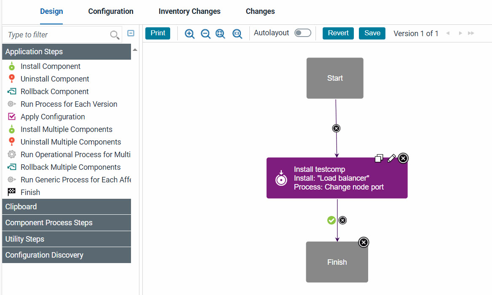
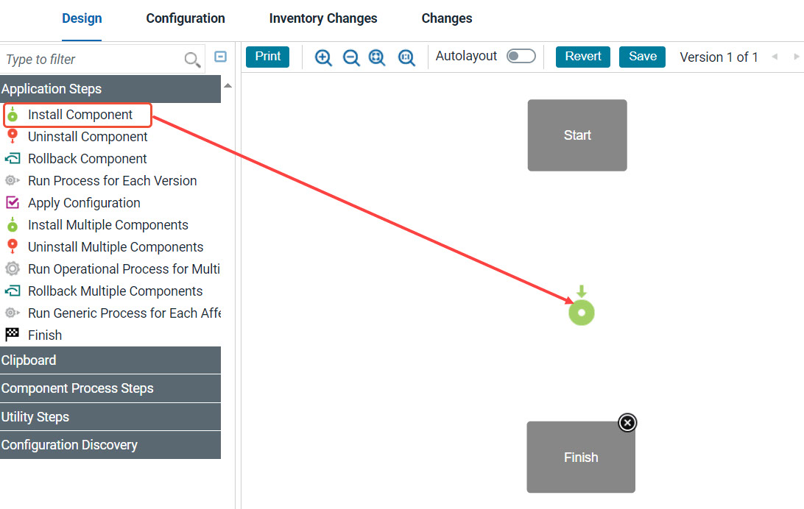
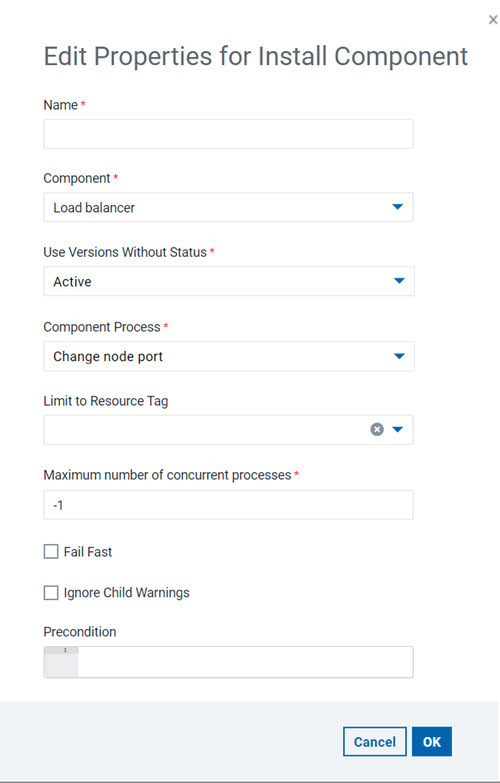
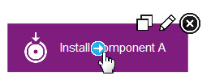
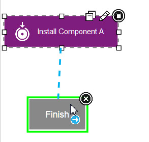
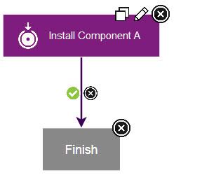

In the process editor you organize the steps in a process,
specify their properties, and connect them to each other.
Procedure
-
Open the component process in the process editor.
- To open a component process, click Components, click the component,
click the Processes tab for the component, and click the process.
- To open an application process, click Applications, click the
Processes tab for the application, and click the process.
- To open a generic process, click Processes, and click the
process.
The process editor opens. The editor is similar for each type of process, but the list
of available steps is different for each type of process.

When the Process
Design pane opens, the
Design view is displayed. Processes
are assembled with the Design view.
Available steps are listed at the left of the window. IBM DevOps Deploy (Deploy) provides several utility steps and plug-ins. More plug-ins
and documentation for those plug-ins are available in the Deploy plug-ins site.
In
addition to the process editor, the following two pages provide
information about the process:
- The Configuration page shows
the properties and settings for the process.
- The Changes page shows a record
of every change to the process, addition or deletion
of a property, and save or deletion of the
process.
-
To add a step:
-
From the list of steps at the left of the window, drag the step to use onto the design space.

To open the
Edit Properties
window, click the edit properties icon . When you drag the first property on the design
pane, you can place the step anywhere on the design space.
Connection links are automatically created from the Start
node to the step and from the step to the Finish node.
When you add more steps, drag them and position them so
that they highlight the connection link between stesps so
that the step is inserted and connection links are
automatically created between the steps. Steps can be
dragged and positioned at any time. However, you must
delete the connection links from the step by clicking the
delete connection icon

, and then reconnect the moved steps.

Configuration dialogs boxes are tailored to the
selected step. Only parameters that are associated with
the step type are displayed.
-
Specify the properties for the step.
Each step has different properties. See
Plug-ins for information
about configuring specific steps.
- Optional:
To add or change the post-processing script, select a script in the Post Processing
Script list.
-
After you configure the step properties, save the step by clicking
Save.
The step is in the design space and is connected to other steps. If you change your
mind, click Cancel to remove the step from the design space.
-
Verify that the step connections create the required process flow:
Connections control the process flow. The originating step runs before the target step. If you
move steps or do not highlight a connection link when you place a step, creating a connection
between steps is a simple process. You drag a connection from the originating step to the target
step. Connections are typically formed automatically. However when you create them manually,
connections are formed one at a time between two steps, the originating step and the target step. To
create connections manually:
-
Hover the cursor over the step to use as the origin of the connection.
The connection tool is displayed.

-
Drag the connection tool over the target step.
The step beneath the connection tool is highlighted.

-
Release the connection tool over the target step to complete the connection.

Each connection has a connection delete tool, conditional flag, and might have other
tools depending on the originating step. Remove a connection by clicking the delete tool.
- Add more steps to the process, connect them, and arrange
them in the process editor.
You can drag steps to move them around the process. In this way, you can arrange the steps in
a meaningful arrangement on the process editor canvas.
Tip: To move more than one step at
a time, hold the Ctrl or Command key and click two or more steps to select them. Then, drag the
steps to a different place in the editor.
-
Verify that the flow of steps is correct.
Each process starts with the Start step and continues until it reaches the Finish step.
Therefore, the Start step must connect to the first step or steps to run. Similarly, the last steps
must connect to the Finish step, or else the process does not finish correctly.
-
When you are finished with your work on the process, click Save.
If comments are required, the
Process Change Comment window opens. Type a
comment, and then click
Save. The server settings control whether comments
are required. To learn more about system settings, see
Server settings and configuration.